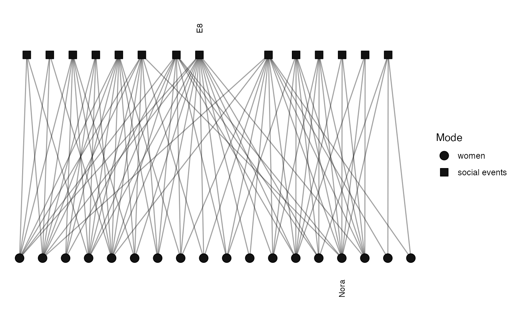
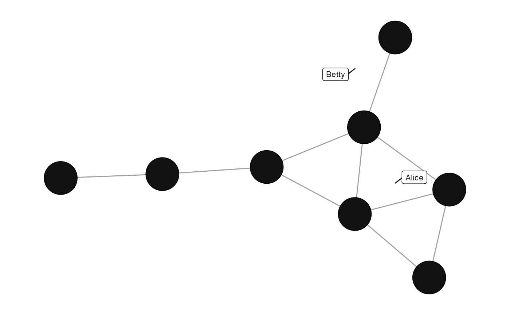
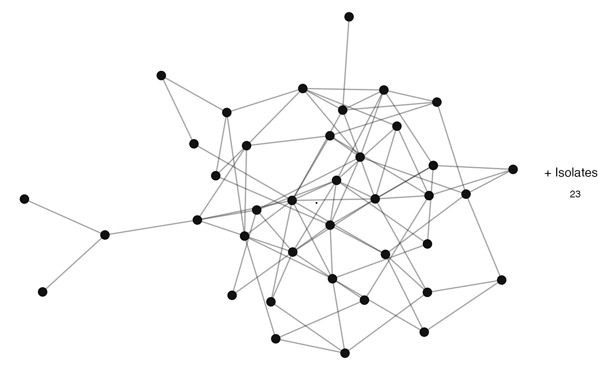
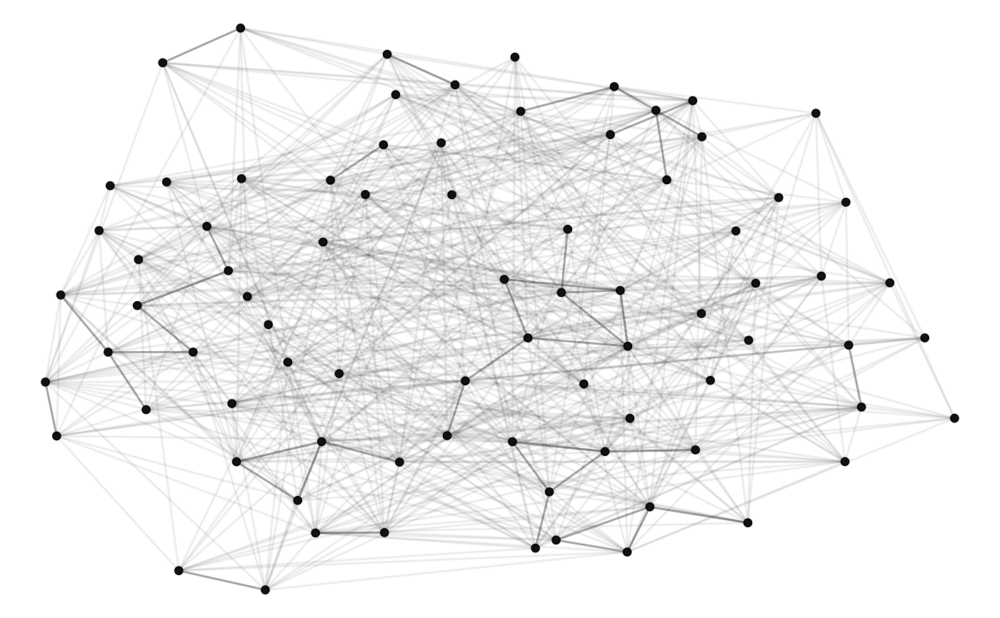

This function provides users with an easy way to graph (m)any network data for exploration, investigation, inspiration, and communication.
graphr() builds upon {ggplot2} and {ggraph} to offer
pretty, easy, and extensible graphing solutions.
Just passing the function some network data
will often be sufficient to return a reasonable-looking graph.
The function also makes it easy to modify many of the most
commonly adapted aspects of a graph,
including node and edge size, colour, and shape,
as arguments rather than additional functions that you need to remember.
These can be defined outright, e.g. node_size = 8, or
in reference to an attribute of the network, e.g. node_size = "wealth".
Lastly, graphr() uses {ggplot2}-related theme information, so
it is easy to make colour palette and fonts institution-specific and consistent.
See e.g. theme_iheid() for more.
To learn more about what can be done visually,
try run_tute("Visualisation").
Usage
graphr(
.data,
layout = NULL,
labels = TRUE,
node_color,
node_shape,
node_size,
node_group,
edge_color,
edge_size,
isolates = c("legend", "caption", "keep"),
snap = FALSE,
label_dist = NULL,
label_repel = TRUE,
edge_bundle = FALSE,
backbone = NULL,
.shared = NULL,
...,
node_colour,
edge_colour
)Arguments
- .data
A manynet-consistent object.
- layout
An igraph, ggraph, or manynet layout algorithm. If not declared, defaults to "configuration" for networks of up to six nodes, "levels" for connected multilevel networks, "layered" for other two mode networks, and "stress" for all other networks. For "layered" layout, one can further split graph by declaring the "center" argument as the "events", "actors", or by declaring a node name. For "concentric" layout algorithm please declare the "membership" as an extra argument. The "membership" argument expects either a quoted node attribute present in data or vector with the same length as nodes to draw concentric circles. For "levels" layout algorithm one may declare the "level" as extra argument. The "level" argument expects either a quoted node attribute present in data or vector with the same length as nodes to hierarchically order categories. If "level" is missing, the levels are taken from a 'lvl' node attribute where there is one, or else from the two modes of a two mode network. The layered layouts ("layered", "lineage", "railway" and "ladder") accept a "ranks" argument, which takes either one of the methods named at
?layout_layeredor a numeric node attribute to lay the layers out by, as a quoted attribute name or a vector with one value for each node. The "scaling" layout places the nodes by multidimensional scaling, so that the distance between two nodes approximates the number of steps between them. Since those coordinates can be read, this layout is drawn with labelled axes on one scale, and captioned with how well two dimensions hold the distances; see?layout_scalingandcheck_stress(). Note that those axes carry distances rather than named dimensions: the drawing can be turned or mirrored without fitting the network any better or any worse. The "correspondence" layout places the nodes by correspondence analysis, so that two nodes with similar ties are drawn together, whether or not they are tied to each other. It is the usual way to draw a two mode network, since it places both modes against the same pair of axes, and it accepts a "direction" argument for a directed network and a "double" argument for a signed one; see?layout_correspondence. Each axis names the share of the network's inertia that it holds.- labels
Which nodes to label, if the network is labelled.
TRUE(the default) labels every node andFALSEnone of them, but a label for every node of a large network hides the network behind them, so a selection of the nodes can be given instead:a number, e.g.
labels = 5, labels the nodes within the top five ranks by degree. Note that this is a depth of ranks rather than a count of nodes: nodes tied at the cut are labelled together, so more than five labels may appear.a measure to rank by, e.g.
labels = "betweenness", labels just the node or nodes that measure singles out."degree","betweenness","cutpoints"(every node the mark flags) and"random"(a small random sample) are available. The two can be combined by naming the number, as inlabels = c(betweenness = 5).the name of a logical node attribute, e.g.
labels = "is_broker", labels the nodes it marks.a logical vector, one value per node, e.g.
labels = netrics::node_is_cutpoint(net); or the names or positions of the nodes to label, e.g.labels = c("Alice", "Betty").
Where a length-one string could mean more than one of these, a node attribute is preferred to a measure, and a measure to a node name. A single number is always read as a depth of ranks rather than as one node's position, so a lone node is best named, as in
labels = "Alice". For networks of more than 30 nodes,labelsdefaults to a selection rather than to every node; passlabels = TRUEfor all of them. Ranking nodes uses the{netrics}package, which is suggested rather than required: without it installed, an automatic selection falls back to a random sample. Two-mode and multilevel networks are ranked within each mode or level, so that every level is labelled and not just the densest.- node_color, node_colour
Node variable to be used for coloring the nodes. It is easiest if this is added as a node attribute to the graph before plotting. Nodes can also be colored by declaring a color instead.
- node_shape
Node variable to be used for shaping the nodes. It is easiest if this is added as a node attribute to the graph before plotting. Nodes can also be shaped by declaring a shape instead.
- node_size
Node variable to be used for sizing the nodes. This can be any continuous variable on the nodes of the network. Since this function expects this to be an existing variable, it is recommended to calculate all node-related statistics prior to using this function. Nodes can also be sized by declaring a numeric size or vector instead.
- node_group
Node variable to be used for grouping the nodes. It is easiest if this is added as a hull over groups before plotting. Group variables should have a minimum of 3 nodes, if less, number groups will be reduced by merging categories with lower counts into one called "other". A membership vector can also be given here. Where nodes belong to several groups at once, as they can to several cliques, give a membership matrix instead: one row for each node, one column for each group, and a one wherever the node belongs to the group. One hull is then drawn for each column, and the hulls overlap where the groups do. A measure that returns such a matrix, such as
netrics::node_x_clique(), can be named without its network, which is taken to be the network being drawn.- edge_color, edge_colour
Tie variable to be used for coloring the nodes. It is easiest if this is added as an edge or tie attribute to the graph before plotting. Edges can also be colored by declaring a color instead.
- edge_size
Tie variable to be used for sizing the edges. This can be any continuous variable on the nodes of the network. Since this function expects this to be an existing variable, it is recommended to calculate all edge-related statistics prior to using this function. Edges can also be sized by declaring a numeric size or vector instead.
- isolates
Character scalar, how to treat isolates. "keep" will keep isolates in the graph as they are. "legend" (default) will remove isolates from the graph but note them in the legend. "caption" will remove isolates from the graph but note them in the caption. If there are no isolates, this argument will be ignored. If the default layout ("stress") is used, we recommend that the "legend" option is used to avoid isolates crowding out the giant component.
- snap
Logical scalar, whether the layout should be snapped to a grid. Where the network repeats a structure, as a lattice does, the two steps it repeats are mapped onto the axes, which draws it as a rectangle of rows and columns. Where it does not, each node moves to the nearest vacant grid point. Layouts that already carry meaning in their coordinates, such as "layered" or "scaling", are left as they are.
- label_dist
Numeric scalar, in points (pt), controlling the extra gap left between labels and node borders – similar to
igraph'svertex.label.dist. Node size is always accounted for automatically (larger nodes push labels further away without any extra configuration);label_distadds further spacing on top of that, and defaults to a small gap (5pt). Set to0for labels right at the node border, or to a larger value (e.g.15) for more spacing. Only used whenlabels = TRUEandlabel_repel = TRUE(as the padding passed to the repel algorithm) orlabel_repel = FALSE(as a fixed nudge away from the node, in the layouts where this makes sense, e.g. "circle"/"concentric", "railway", "lineage").- label_repel
Logical scalar, whether labels should be repelled away from each other and from nodes using
ggrepel(viaggraph'srepelargument). Defaults toTRUE. Set toFALSEto place labels at a fixed offset (seelabel_dist) without the (sometimes slow, and non-deterministic between runs for some layouts) repelling algorithm. The layered layouts ("layered", "lineage", "railway" and "ladder") place each node in a layer, which is where the reader looks for it, so a repelled label there would say less about which node it labels than a fixed offset does. They ignore this argument and always offset.- edge_bundle
Edge bundling, off by default (
FALSE). WhenTRUE(or equivalently"force"), edges are bundled together using ggraph's force-directed edge bundling (geom_edge_bundle_force()), which pulls nearby edges into shared paths to reduce visual clutter in dense networks. Alternative non-hierarchical algorithms can be selected by name:"path"(geom_edge_bundle_path()) or"minimal"(geom_edge_bundle_minimal()). Bundling only makes a visible difference when a network has enough edges; for directed networks arrowheads are retained, but the slight reciprocal-tie curvature used for unbundled edges does not apply.- backbone
How to treat the network's backbone: the ties that a local null model keeps, because they carry more weight, or sit in more triangles, than chance alone would put there. Where a backbone is used, those ties are drawn as the shortest, so that the layout pulls apart the groups they hold together, and every tie is still drawn, with the ties the filter does not keep faded well back. This is what to reach for when a network is dense enough to draw as a hairball. By default (
NULL) this is decided by the network: a network of at least 50 nodes and a mean degree of at least 8 is drawn this way, and reported.FALSEdraws every tie alike, andTRUEasks for a backbone whatever the network's size. One ofmanynet's filters can be named instead: "disparity", "lans", "noise", "mlf", or "simmelian". Where none is named,manynetuses "lans" for a weighted network and "simmelian" for an unweighted one. A number between 0 and 1 sets the threshold instead of the filter: a smaller number keeps fewer ties. Only the layouts that read tie lengths – "stress" (the default), "fr", "drl" and "kk" – are laid out this way. Every other layout, including those that already carry meaning in their coordinates such as "layered" or "scaling", keeps its coordinates and only fades its ties. Requiresmanynet2.3.0 or later, and does not apply to signed networks.Internal. A list of the aesthetic ranges and categories found across a list of networks, which
graphs()uses to draw and label each of its panels against the same scales. Not intended to be set by hand.- ...
Extra arguments to pass on to the layout algorithm, if necessary.
Value
A ggplot2::ggplot() object.
The last plot can be saved to the file system using ggplot2::ggsave().
Examples
graphr(ison_adolescents)
 ison_adolescents |>
mutate(color = rep(c("introvert","extrovert"), times = 4),
size = ifelse(netrics::node_is_cutpoint(ison_adolescents), 6, 3)) |>
mutate_ties(ecolor = rep(c("friends", "acquaintances"), times = 5)) |>
graphr(node_color = "color", node_size = "size",
edge_size = 1.5, edge_color = "ecolor")
ison_adolescents |>
mutate(color = rep(c("introvert","extrovert"), times = 4),
size = ifelse(netrics::node_is_cutpoint(ison_adolescents), 6, 3)) |>
mutate_ties(ecolor = rep(c("friends", "acquaintances"), times = 5)) |>
graphr(node_color = "color", node_size = "size",
edge_size = 1.5, edge_color = "ecolor")
 graphr(ison_southern_women, labels = TRUE, label_dist = 10)
graphr(ison_southern_women, labels = TRUE, label_dist = 10)
 graphr(ison_southern_women, labels = TRUE, label_repel = FALSE)
graphr(ison_southern_women, labels = TRUE, label_repel = FALSE)
 # Label a selection of the nodes rather than all of them
graphr(ison_southern_women, labels = 2)
# Label a selection of the nodes rather than all of them
graphr(ison_southern_women, labels = 2)
 graphr(ison_southern_women, labels = "betweenness")
graphr(ison_southern_women, labels = "betweenness")

graphr(ison_adolescents, labels = c("Alice", "Betty"))

graphr(manynet::generate_random(40, 0.1), edge_bundle = TRUE)

graphr(manynet::generate_random(80, 0.2), backbone = TRUE)
